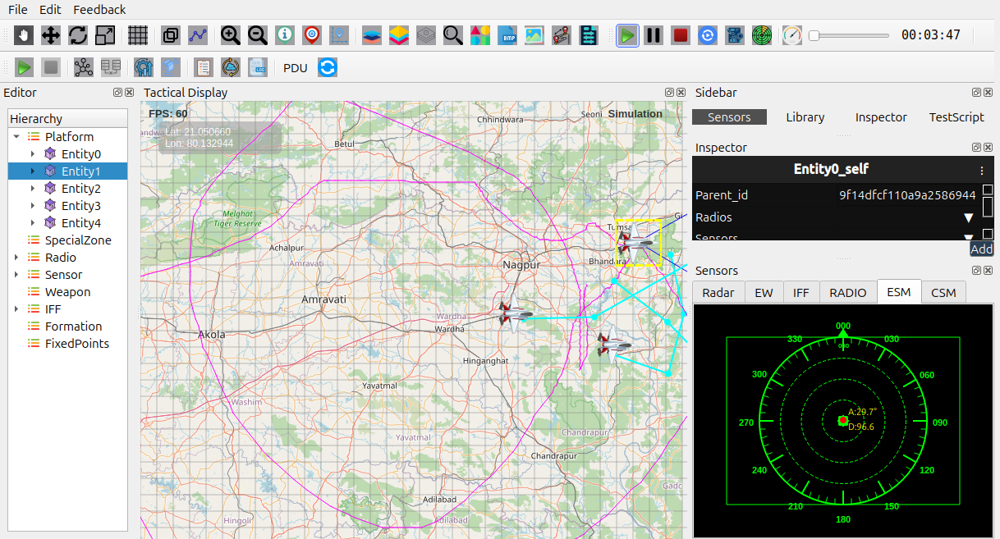

ESM (Electronic Support Measures)
The ESM module provides passive detection of electromagnetic emissions. It helps an entity identify, classify, and monitor emitters without transmitting any signal of its own, making it ideal for stealth, reconnaissance, and intelligence-focused roles.
Purpose of ESM
The ESM system helps you:
Detect radar emissions passively.
Classify emitters based on known signatures.
Estimate direction or bearing without revealing your own position.
Improve threat awareness and early warning.
Adding ESM to an Entity
Select the entity in the Hierarchy.

Open the context menu.

Choose Add Sensor then Choose ESM from Dropdown.

The ESM component appears in the entity’s system list.
ESM Profiles
ESM behaviour is defined by its assigned profile. A typical ESM Profile may include:
Sensitivity level
Detection range
Known emitter signature library
Reporting mode Display (raw or filtered)
How the ESM Works
Operates passively with no active transmission.
Detects incoming emissions such as radar pulses.
Estimates angle or bearing of the detected emitter.
- Reports detection results to:
Alert/Warning subsystems
Continuously updates during simulation runtime.
{kind=link}

Recommended Usage
Add ESM to reconnaissance, naval, or surveillance platforms.
Combine with active sensors for earlier threat detection.
Enable debug tools when validating ESM behaviour.
Common Issues and Fixes
ESM not detecting anything
No emitters active or in range.
Sensitivity set too low.
No profile assigned.
Entity disabled or simulation paused.
Notes
ESM is fully passive and never reveals the entity’s position.